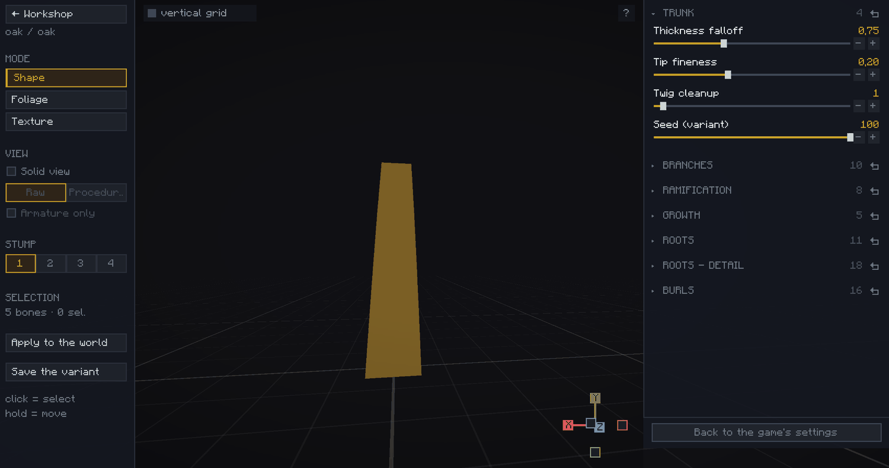
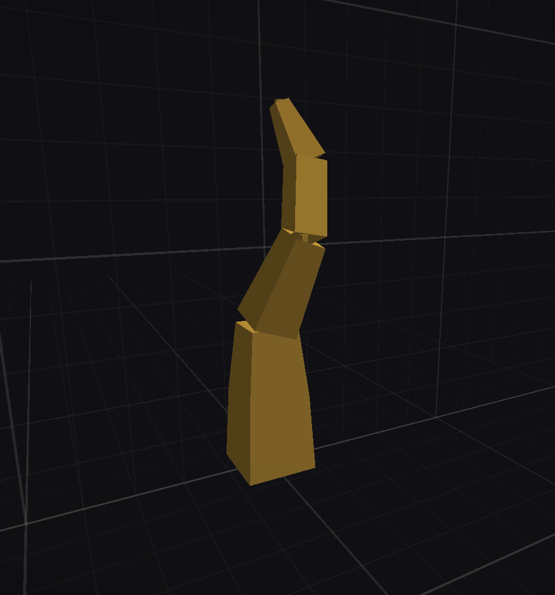
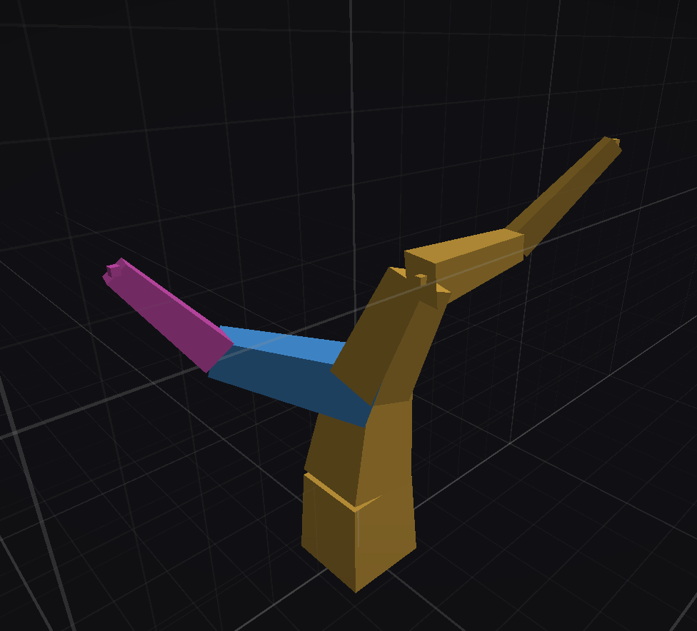
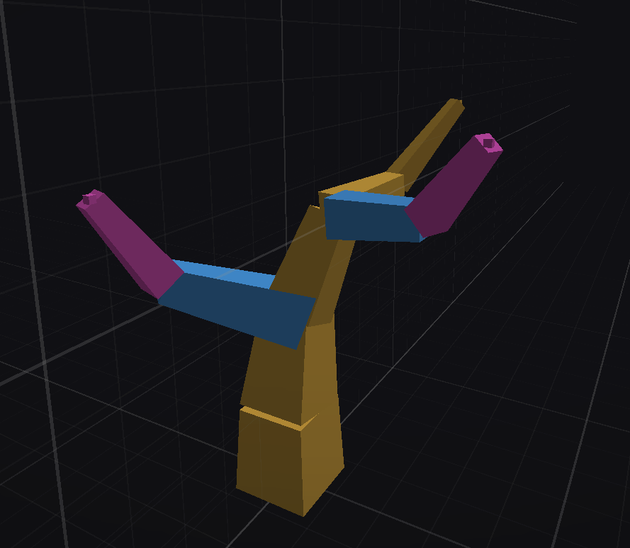
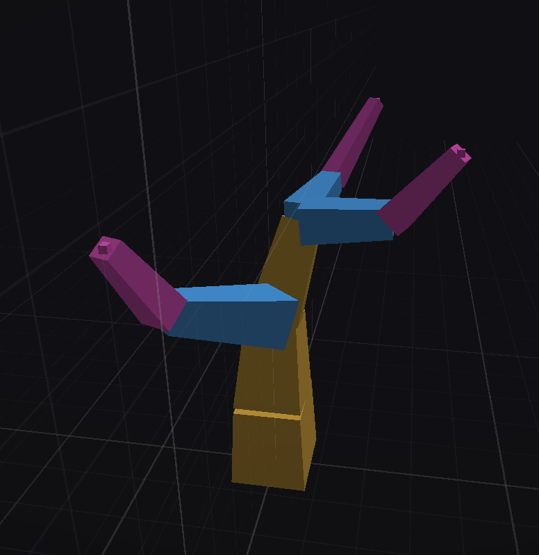

Tactile:Wood · The species workshop
The tree's skeleton: the panels, the shortcuts, the segment types, the trunk and the branches.
The left panel gathers what you are editing and how you look at it. The right one holds your tree's procedural settings, which are the subject of the last module.

Raw, Procedural and Armature only only become available once Solid view is ticked, and the Draw button appears in Procedural only.
The vertical grid checkbox helps you judge your tree's size and alignment. The gizmo at the bottom right snaps the camera to one of the three axes.
The ? button at the top right brings them back at any time.
In Foliage mode, only the period key and Ctrl + Z remain. In Texture mode no sculpting shortcut answers at all: the tree is only scenery there, though you can still orbit and zoom.
The editor borrows heavily from Blender's interface. It can be disconcerting if you have never used it, and delightful if you have.
Middle click orbits around your tree so you can inspect it from every angle. It also changes how you handle segments, since moving and rotating follow your point of view.
Shift + middle click pans the camera freely, which helps a lot when you zoom in or work on a tall tree. To get back to the starting view, deselect everything with a click in the void and press the period key, on the numpad or on the main keyboard: with nothing selected it frames the whole tree, with a selection it frames the active segment.
The wheel zooms, but be careful not to aim at a segment or you will change its thickness by accident. Ctrl + Z undoes that. Ctrl + wheel forces the zoom, which is handy when the tree fills the screen and there is no empty space left to aim at.
The trunk, in yellow, sets your tree's height. The procedural side will add burls and further branches to it, and may even make it grow. Keep the trunk regular, without too many kinks.
Branches, in blue, dress your tree and make it yours. They are far more permissive in shape and they carry the look you are after. The procedural side will always add its own on top, and always the same number of them. It works from a fixed budget of segments, which it shares between its branches and yours: the more you sculpt, the smaller each share, and the shorter the growths it adds. Your silhouette therefore stays recognisable on the finished tree. This is deliberate and necessary to preserve your visual identity.
Tips, in pink, are the last segment of a branch: they tell the system where a branch ends. They mostly serve the foliage, since tips are where you will want to put leaves, which is what lets the procedural side reproduce the shape of your crown. The next module comes back to this.
Hold right click on the stump to extrude and give the trunk its shape; Y extrudes perfectly straight. For a clean result, keep segments about one block long and avoid sharp angles. R is there to adjust them more precisely.
Your trunk tapers on its own as you extrude. An irregular trunk will be caught up by the procedural side, but it may give strange results.
When you select a segment, everything downstream lights up with it and will follow: moving, rotating or deleting takes the whole descent along. The counter still reads one selected segment, which is expected.

You can now grow branches to dress the tree and give it a real identity. Extrude from the end of the trunk, and they will taper by themselves. You can add sub-branches, but beware: an overly complex tree is not necessarily a beautiful one.
Use rotation, axis constraints and the camera position to place segments exactly where you want them. R + Y is one of the most useful combinations.

To save yourself some work, use your first branch as a model for the others: Shift + D duplicates it, then P detaches it from its current segment. Use a constrained rotation to put it back where it belongs, R + X for instance.

After a duplication, the Spread around the trunk button in the left panel arranges every selected branch around the trunk in one gesture.
Segment types matter a great deal, and you have to set them according to what you want your tree to be. To change one, put the cursor on the segment and use Shift + wheel to force its type.
For example, to turn the tip of the trunk into a third branch, set the first segment to branch and the second one to tip.

And there you are, the first stage of your tree is done.
The help channel is there for that, and other people's creations are often the best answer.
Join the Discord